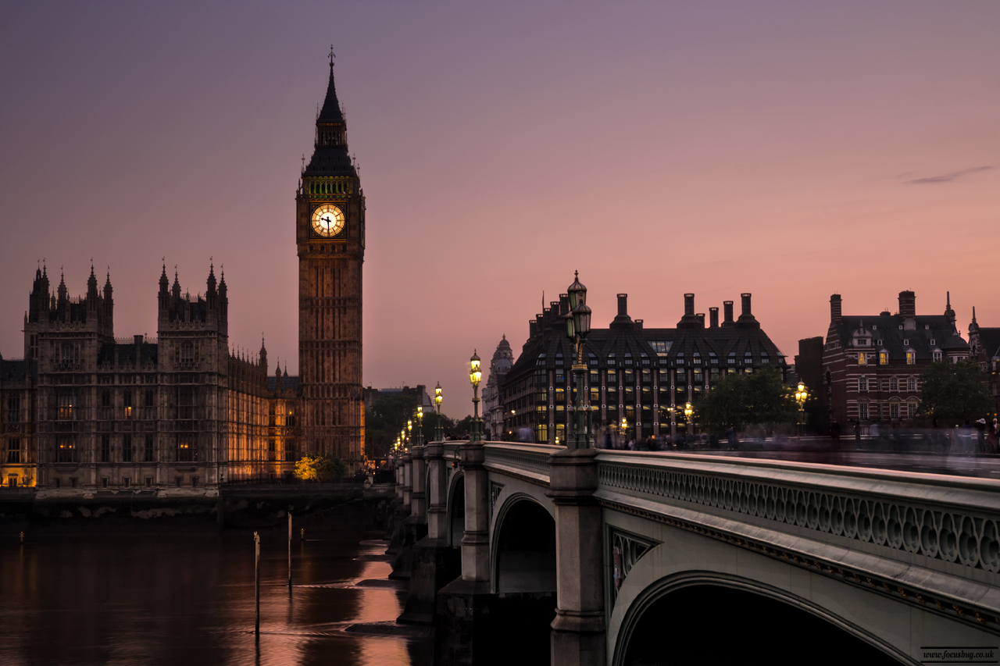
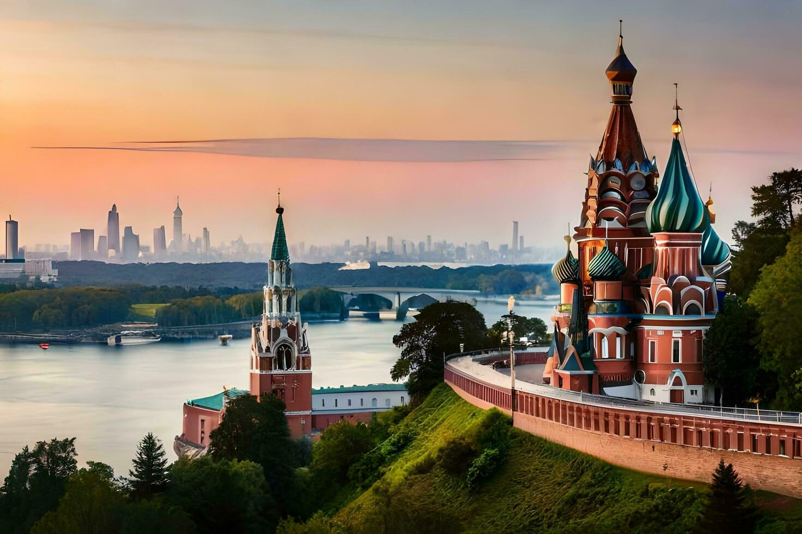
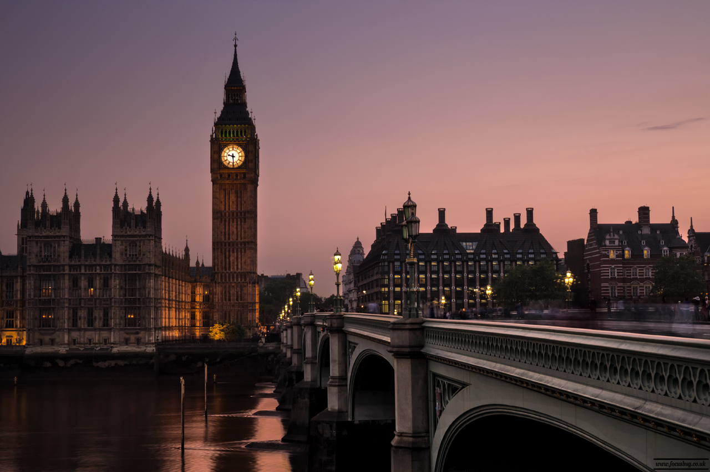
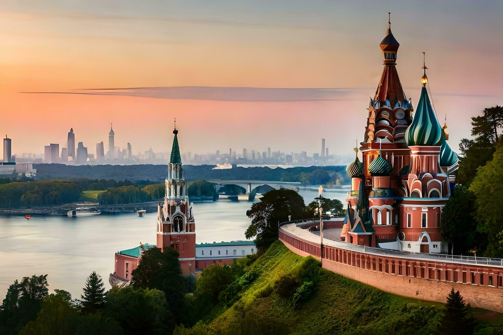

Larissa Alves
Amante de viagens, culturas e gastronomia 🧳✈️🌎
Aqui estão minhas memórias registradas em forma de blog,
fique à vontade para explorá-las e me sugerir novos
destinos. E aí, bora viajar? 🛫
Amante de viagens, culturas e gastronomia 🧳✈️🌎
Aqui estão minhas memórias registradas em forma de blog,
fique à vontade para explorá-las e me sugerir novos
destinos. E aí, bora viajar? 🛫
 Ceará - Brasil
Ceará - Brasil 13 países
13 países 230 fotos
230 fotos

 


